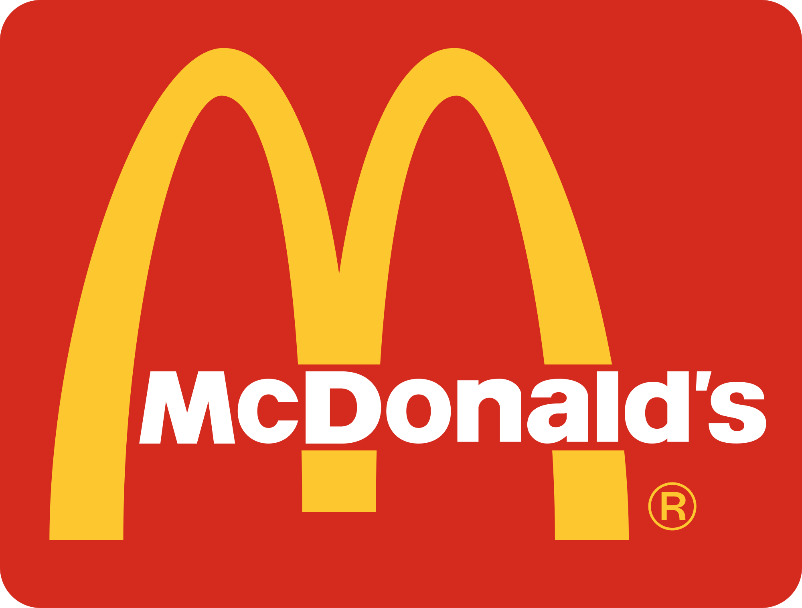

I worked on 2 projects during my first year at western.
I helped design a shopping cart for a small plant company and I helped design a system that would control the pressure in a vessel
Additionally, I worked overnights at Mcdonalds as a crew member
